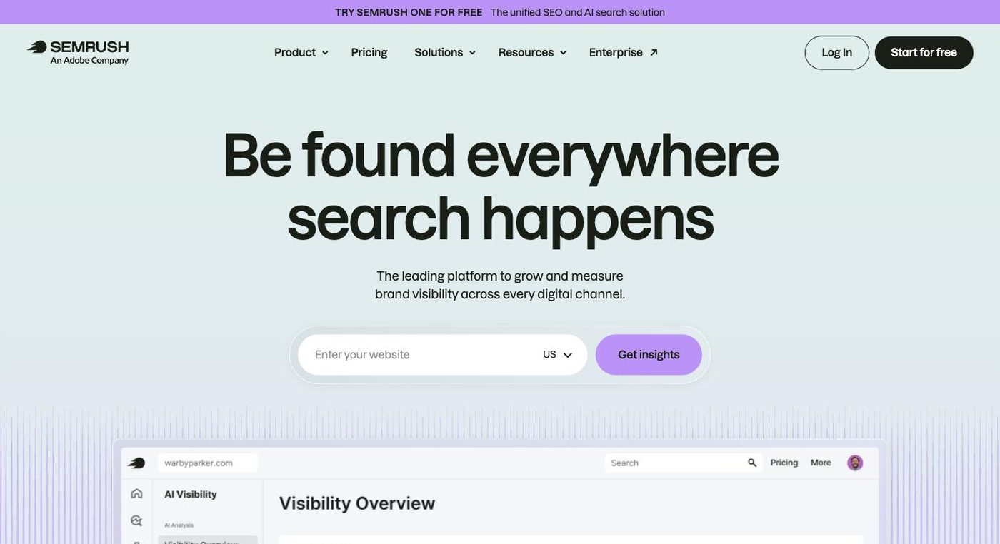

Semrush
All-in-one SEO, competitor research and AI-search visibility platform

- Category
- Marketing & SEO
- Pricing
- Free plan (limited: 1 demo project, 10 reports/day); SEO $139/mo ($117.33/mo annual); Starter $199/mo; Pro+ $299/mo; Advanced custom
- Best for
- For: SEO agencies, in-house marketing teams and competitive-research-heavy businesses that will use several modules.
- Official site
- www.semrush.com
- Last checked
- 2026-10-16
Semrush is a strong choice for agencies and in-house SEO teams who will use many of its tools and want competitor data in one place. Solo bloggers and small sites that need one function should skip it, since the price and breadth are more than they will use.
It covers keyword research, backlink analysis, rank tracking, technical site audits, traffic and market benchmarking, content optimization, advertising research, local listings and social scheduling. Semrush states it holds about 29B keywords, 43T backlinks and 142 geo databases. Its newer layer, AI Visibility, tracks how a brand is mentioned in AI answers and compares it with competitors. Higher plans add more tracked sites, keywords and daily AI prompts.
For: SEO agencies, in-house marketing teams and competitive-research-heavy businesses that will use several modules. Not for: freelancers, hobby sites or anyone who needs only one task such as rank checking or content scoring, where a cheaper single-purpose tool fits better.
Key features
Keyword research
Keyword database with volume, difficulty and related-term ideas across 142 geo databases.
Backlink analysis
Referring domains, link profiles and competitor link comparison based on a 43T-backlink index.
Site Audit
Crawls your site and flags technical SEO problems; the Starter plan adds an AI-ready audit.
Position tracking
Daily rank tracking; capacity is 500 keywords on SEO and Starter, 1,500 on Pro+, 5,000+ on Advanced.
AI Visibility
Shows how brands appear in AI answers, with prompt-level tracking. Daily tracked prompts: 50 on Starter, 100 on Pro+, unlimited on Advanced.
Traffic and market analysis
Competitor traffic estimates and benchmarking. These are estimates; verify against your own analytics.
Content, ads, local, social, AI PR
Add-on style modules for content scoring, Google/Meta ad research, Google Business Profile management, post scheduling and PR outreach.
Pricing breakdown
Free
- 1 demo project
- 10 reports per day
- AI Visibility features
- Basic onboarding
SEO
- 5 websites
- 500 keywords tracked daily
- Position tracking and Site Audit
- AI visibility reports for any domain
Starter (SEO + AI Search)
- 5 websites, 500 keywords
- 50 AI prompts daily
- 1 domain for AI brand performance
- MCP access, AI-ready Site Audit
Pro+ (SEO + AI Search)
- 15 websites, 1,500 keywords
- 100 AI prompts daily
- Historical SEO data, content optimization
- Multi-location and device tracking
Advanced
- 40+ websites, 5,000+ keywords
- Unlimited AI prompts daily
- SEO share of voice, advanced API integration
- Team users and reporting
Pros and cons
Pros
- Breadth: keyword, backlink, audit, tracking, content, ads and social tools under one login
- Large proprietary data sets (29B keywords, 43T backlinks as stated by Semrush)
- AI Visibility tracking is built into the plans rather than sold as a separate tool
- A permanent free plan and a 7-day trial for paid tiers let you test before paying
- Annual billing saves up to 17%
Cons
- Entry paid tier is $139/mo, a lot for solo users
- The free plan is a demo: one demo project and 10 reports a day
- Traffic figures for other sites are estimates and can differ from first-party analytics
- Plan limits (websites, keywords, AI prompts) tighten quickly; stepping up from Starter to Pro+ is $100/mo more
- Advanced pricing is not published, so larger teams must go through sales
- Many modules means a learning curve for beginners
Alternatives to Semrush
Surfer SEO
Cheaper and more focused if your main job is optimizing individual articles.
Compare →Otterly AI
Pick it if you only need to monitor brand mentions in AI answers, not a full SEO suite.
Compare →HubSpot AI Tools
Better if you want marketing AI tied to a CRM rather than standalone SEO data.
Compare →Frequently asked questions
Does Semrush have a free plan?
Yes, but a small one: 1 demo project and 10 reports per day, no credit card. Paid plans have a 7-day free trial.
How much does Semrush cost?
SEO is $139/mo, Starter $199/mo and Pro+ $299/mo, or $117.33, $165.17 and $248.17 per month billed annually. Advanced is custom-priced.
What is the difference between SEO and Starter?
Starter adds tracking of 50 AI prompts daily, a domain for AI brand performance, MCP access and an AI-ready Site Audit; website and keyword limits stay the same.
Semrush or Surfer SEO?
Semrush is a broad suite with competitor and backlink data; Surfer is cheaper and focused on optimizing individual articles. Many content teams pick Surfer for writing and Semrush for research.
Are Semrush traffic numbers accurate?
They are estimates for sites you don't own. Treat them as directional and use Google Search Console or Analytics for your own data.
Ready to try Semrush?
Head to the official site to explore pricing and start a free trial where available.
Visit Semrush →